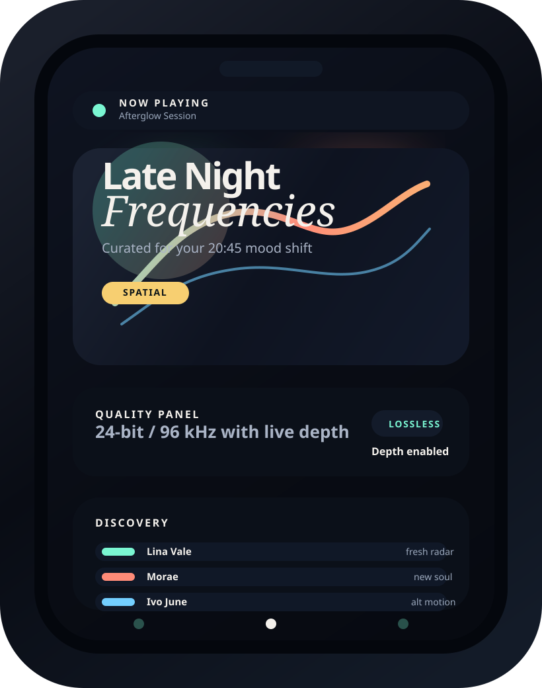

Som para quem descobre antes
Descubra a trilha que fala por você.
Melodia une curadoria viva, áudio lossless e descoberta de artistas em uma experiência criada para quem ouve com identidade.
Listening now
Late Night Frequencies
Spatial Lossless
Profundidade, contraste e presença dignos de palco.

Curadoria viva
Artistas novos toda semana
Playlists feitas para humor, cidade e hora.
Apresentação
Mais do que tocar música: Melodia lê contexto, filtra ruído e entrega desejo.
A experiência foi desenhada para parecer curada, não automatizada. Cada dobra mistura edição, tecnologia e um senso claro de presença de marca.
Curadoria que acompanha seu ritmo em vez de repetir algoritmo.
Melodia cruza humor, horário, hábito e textura sonora para montar sequências com início, tensão e respiro. Parece uma sessão preparada por alguém que realmente conhece seu gosto.
87%
dos usuários encontram ao menos um artista novo já na primeira semana.
Um sistema de descoberta pensado para surpreender sem perder coerência.
Qualidade que aparece no corpo
dynamic range / lossless / spatial
Mais definição de graves, mais ar nos agudos e uma sensação espacial que transforma fones em palco íntimo.
Uma interface que some para a música aparecer.
Gestos claros, foco nos detalhes certos e transições delicadas deixam a navegação mais intuitiva e mais desejável.
Morning drive
Future soul
Underground pop
After party
Clean UI
Fresh radar
Funcionalidades
Recursos de produto real, apresentados com presença e precisão.
Em vez de uma grade previsível, cada bloco dá foco ao que faz o Melodia parecer premium: personalização, descoberta, som e clareza de uso.
01
Playlists personalizadas que evoluem com sua rotina.
Os mixes ajustam temperatura, intensidade e familiaridade conforme sua escuta muda ao longo do dia.
- Sequências montadas por contexto, não só por gênero.
- Playlists que amadurecem sem perder sua assinatura.
- Recomendações com equilíbrio entre conforto e novidade.
02
Descoberta de artistas com cara de cena, não de feed infinito.
O radar combina proximidade estética, contexto e timing cultural para apresentar nomes novos sem parecer aleatório.
- Radar semanal de artistas emergentes.
- Conexões entre referências, moods e cidades.
- Curadoria que valoriza repertório e surpresa.
03
Qualidade sonora que faz cada detalhe ocupar espaço.
Da textura dos vocais aos transientes mais delicados, o player foi pensado para quem percebe profundidade e resposta.
- Streaming lossless com sensação de estúdio.
- Spatial audio para fones e caixas compatíveis.
- Controles claros para ouvir com mais intenção.
04
Interface intuitiva para o usuário pensar na música, não no caminho.
A arquitetura visual prioriza leitura, gesto e foco. Tudo parece mais leve, rápido e óbvio sem se tornar banal.
- Busca clara por mood, artista ou atividade.
- Navegação de uma mão com feedback sutil.
- Camadas de interface que respiram e organizam.
Depoimentos
Validação social com linguagem editorial e sensação de marca viva.
Cada fala reforça o posicionamento do produto: descoberta com refinamento, clareza e desejo de uso recorrente.
Melodia não parece só acertar o que eu gosto. Parece entender quando eu quero conforto e quando eu quero ser surpreendida.
A experiência é fluida de um jeito raro: tudo parece claro, premium e musical ao mesmo tempo.
Foi o primeiro app em meses que me apresentou artistas novos sem me empurrar uma estética genérica.
4.9/5
avaliação média no beta fechado
+18k
ouvintes na waitlist global
63 países
sessões ativas no lançamento privado
Contato
Entre na próxima onda do Melodia.
Se você quer acesso antecipado, parceria ou falar com o time, deixe seus dados. A resposta é humana, rápida e com o mesmo cuidado da interface.
Acesso antecipado
Receba convites para o beta e playlists exclusivas.
Parcerias culturais
Ative collabs com artistas, labels e criadores.
Feedback qualificado
Ajude a moldar a experiência antes do lançamento.